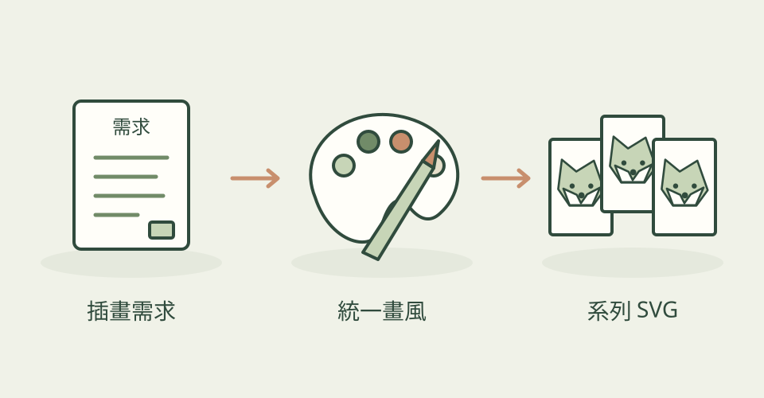
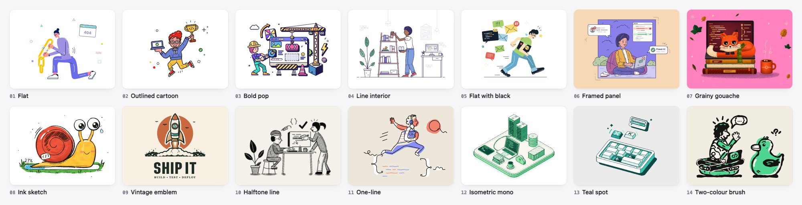

需要的往往不只一張漂亮插畫，而是一組擺在一起仍然協調的作品。MengTo 的插畫分區把畫風整理成可重複使用的作法：配色、線條、陰影、人物姿態與構圖，都有具體規則。
它怎麼幫忙
每一種風格都有三張原作者範例，以及自己的繪圖工具、配色資料與檢查流程。AI 先畫 SVG，再把圖渲染出來，對照範例修正。合集涵蓋扁平人物、等距單色、單線條、墨水速寫與顆粒粉彩等十四種路線。
三步驟看懂這個技能

把同一套配色與造型規則，延伸成一組風格一致的插畫。
功能示意・本站繪製 放大查看可以這樣開口
這是一個可依需求修改的委託範例。
用 illustration-grainy-gouache 畫三張同畫風的小插圖：貓咪整理資料、熊邀請朋友、狐狸完成作品。保留一致配色，交付可編輯 SVG。
適合什麼工作
適合需要系列配圖的產品設計師、品牌編輯與插畫工作者。比起只探索單張畫面，它更適合持續維持同一套視覺語言。
開始之前
- 準備工具
- 插畫路線需能寫程式和看圖的 agent、Node、playwright-core 與 Chromium。新增影片路線另需 ffmpeg／Python；AI 分身使用 HeyGen API、ElevenLabs 及 Node 20、bash。
- 使用成本
- SVG 插畫沒有必需的生圖 API，agent 用量另計。新增影片技能的配音／字幕使用 Fil 等服務，AI 分身需 HeyGen 訓練與影片、ElevenLabs 聲音費用；必須先看報價。本站未呼叫付費生成。
- 交付內容
- 可編輯 SVG、渲染預覽圖
- 先留意
- 星數屬整個 MengTo/Skills 合集。本篇主圖仍是插畫範例，不代表新增影片或分身成果。AI 分身只適用本人或已同意的人，嘴型與手部仍須人工比較。本站未執行候選程式。
最近的觀察
2026-11-03：插畫分區之外，合集新增 HTML Explainer Video 與 Create AI Avatar。前者以逐字時間帶動畫，可切換版型和視覺、先用免費草稿時鐘看畫面，再接付費配音；後者將本人或已同意者的影片訓練成 HeyGen 分身，搭配 ElevenLabs 聲音，以同段音訊比較嘴型。兩者是影片新技能，不是十四種插畫風格的新增畫風。 2026-11-04：延續 11/03 補充的解說影片與 AI 分身路線；Create AI Avatar 預設引擎改為 Avatar V，補明單張照片可先建立 photo avatar，再以相同音訊比較 V、IV、III。作者展示也改為照片製作的主持人，不能當成真人訓練分身的對照實測。適合已有同意授權肖像、想做說話主持人的創作者；需 HeyGen、音訊或 ElevenLabs、Node 20／bash／ffmpeg，訓練及生成按服務計費，先核對報價。插畫十四種風格本身未增加，主圖仍為原有插畫。 2026-11-06：同合集新增 URL to Motion Design，從已獲授權的產品影片或貼文連結挑出 5–10 個不同的動態設計鏡頭，整理截圖與片段，再以自己的文字重做 Fil HTML 場景，交付試映頁和帶音效 MP4。例如參考一段產品介紹中的字卡節奏，改成自己產品的說明；來源片段只供參考，不直接發布。需要 Node、Python、ffmpeg、ImageMagick、瀏覽器、Fil/facet-studio 環境；部分來源另需 yt-dlp。作者流程可能花數小時 agent 用量，不能當作通用一鍵影片工具，也不宣稱評審 8 分是客觀品質保證。十四種插畫風格沒有增加，主圖仍是原有插畫。 2026-11-09：合集新增 Digital Twin 流程，從本人或有明確授權成年人的照片與聲音，製作一致的人像照片、說話短片和配音；先量測臉部、檢查背景與手部，再以低解析草稿挑選後做高解析版本。例如設計師替自己的作品集錄製介紹，可先選一張符合本人樣貌的工作室照片，再做五秒說話片段。這是插畫以外的補充技能，十四種 SVG 插畫風格未改。需要 Fil／Higgsfield、Seedream／Seedance 和可選 ElevenLabs 等服務，圖片、草稿、成片、配音分別計費；應依當次服務報價與額度確認，不能把本機量測免費當作整個流程免費。含 Swift、Python 與影片處理工具，平台身分驗證需本人完成；本站未付費執行或驗證相似度。
看看其他畫風

作者與來源
本文依作者公開說明整理，沒有實際執行這個專案。功能插圖由本站繪製，原作者範例另行標示；並非本站執行技能的測試結果。GitHub 星數為專案總量，觀察時間為 2026年11月11日 08:34（台北時間）。
與前次快照相比增加 17 星；這不是 GitHub Trending 排名。